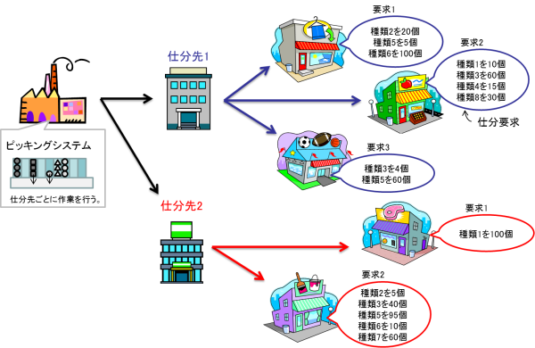

|
Optimization benchmark problem for operational planning
and scheduling in an automatic picking system (Ver. 2)
Summary
Automatic picking system is one of examples of logistic devices which assort products.
In the automatic picking system, as shown in Figs. 1 and 2, the products are assorted based on the given assortment demands.
In order to obtain an optimal operational plan, the products assignment problem to the lanes and the scheduling problem to determine output schedules of the products from the lanes and a work order of each assortment demand have to be considered simultaneously.
This benchmark problem provides two types of operational planning problems which are labeled "00" and "01".
The specific formulation is given in the references [1].
 Fig. 1: Automatic picking system [2] (the characters in the figure are written in Japanese) 
Fig. 2: Example of delivery demands [2]
(the characters in the figure are written in Japanese)
Class and scale (in the case of the problem 00)
- Class: Discrete nonlinear optimization problem
- Number of decision variables: 925,500 (Continuous: 0, Discrete: 925,500)
- Number of inequality constraints: 89,075 (Linear: 100, Nonlinear: 88,975)
- Number of equality constraints: 19,100 (Linear: 10,100, Nonlinear: 9,000)
Known Feasible Solutions (OFV is objective function value. Sol. is solution.)
| Method |
OFV |
Constraint violations |
Ref. |
Reporter |
Sol. |
| Total |
Tolerance |
| SA and Graph based heuristics |
3574.25 |
0 |
1.0 × 10-10 |
[5] |
H. Tanji |
Sol.† (Problem00) |
| SA and Graph based heuristics |
3271.25 |
0 |
1.0 × 10-10 |
[5] |
H. Tanji |
Sol.† (Problem01) |
| SA and Graph based heuristics |
3612.25 |
— |
1.0 × 10-10 |
[4] |
R. Kanaya |
Sol.† (Problem 00) |
| SA and Graph based heuristics |
3424.50 |
— |
1.0 × 10-10 |
[4] |
R. Kanaya |
Sol.† (Problem 01) |
| Constraint programming |
4149.50 |
0 |
1.0 × 10-10 |
[3] |
T. Miyamoto |
Sol.† (Problem 00) |
| Constraint programming |
4047.00 |
0 |
1.0 × 10-10 |
[3] |
T. Miyamoto |
Sol.† (Problem 01) |
| — |
4206.00 |
0 |
0 |
— |
— |
Sol.† (Problem 00) |
| — |
4159.00 |
0 |
0 |
— |
— |
Sol.† (Problem 01) |
†Decompress the obtained file. Replace the decompressed text files by "P3_solution_y.txt" and "P3_data.csv" in the source code.
Source code
P3-2.zip (C/C++) — See "Readme.txt" in order to know how to use.
References
| [1] |
H. Iima, Y. Kawano, and Y. Koguma: "Operational planning and scheduling benchmark problem in an automatic picking system", IEEJ Transactions on Electronics, Information, and Systems, Vol. 135, No. 10 pp. 1270–1278 (2015) [in Japanese] |
| [2] |
Investigating R&D committee on new development of computational intelligence techniques and their applications to industrial systems: "Optimization benchmark problems for industrial applications", IEEJ Tech. Rep., No. 1287, Section 3.4 (2013) [in Japanese] |
| [3] |
T. Miyamoto, K. Mori, S. Kitamura, and Y. Izui: "Constraint programming model for operational planning and scheduling problem in automatic picking system", Proc. of International Symposium on Scheduling 2015, pp. 163–168 (2015) |
| [4] |
R. Kanaya, S. Koakutsu, T. Okamoto, T. Shimobaba, and T. Ito: "Improvement of the solver for optimization benchmark problem for operational planning and scheduling in the automatic picking system by using the simulated annealing", Proc. of SICE SANDI Annual Symposium (SSI2017), pp. 33–38 (2017) |
| [5] |
H. Tanji and S. Imahori: "A high-performance heuristic algorithm for the automatic picking system operational planning problem", Proc. of
Scheduling Symposium 2021, pp. 57–62 (2021) [in Japanese] |
Change log
- Apr. 3rd, 2022: The reference [5] is added.
- Mar. 16th, 2022: A new solution is added to Known Feasible Solutions.
- Dec. 7th, 2017: A new solution is added to Known Feasible Solutions.
- Jan. 5th, 2016: The source code based on the reference [1] is released.
|
|
|